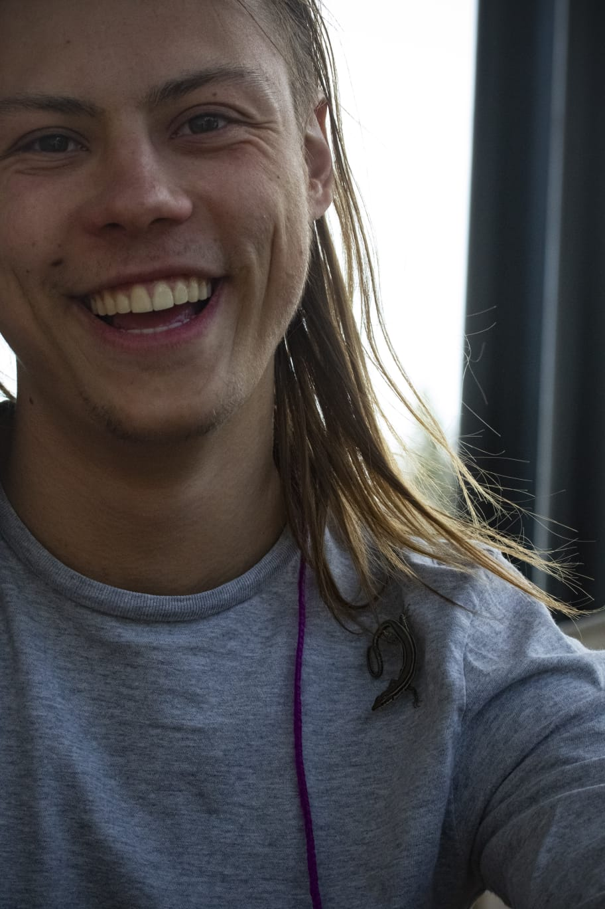

Quién soy

Me imagino que lo más apropiado será empezar presentándome. Me llamo Rafa, soy estudiante de 42 Málaga y quiero
Qué puedo ofrecer a la Noria
- Educación ambiental Mi trabajo está en la ciudad pero mi mente suele estar en el campo, recorriendo, arreglando o ideando caminos, admirando los animales, las plantas y aunque por desgracia he fracasado en estudiarlas formalmente, las rocas.
- Educación agrícola
- arreglo bicis? Por amante de la naturaleza, y fascinado de los inventos, creo que no . No hay nada mas humano que las herramientas y la más noble a mi parecer, de todas es la bicicleta, que libera la cansada espalda del caballo y hace del desayuno el combustible para llegar
qa tu destino.
Qué puede la noria hacer por mi?
- Coworking: El coworking,un templo de la concentración y el trabajo, donde puedo arrancar las ideas de mi cerebro, moldear código, estudiar, aprender y crear.
- 42, obvio
- hay cafe?
Quien soy
- He estudiado forestales
- Me gusta MUCHO el campo
- La universidad me pega
- Me gusta programar
Que hago
Qué quiero hacer
Guión
(Entro en bici, intentando hacer un stopie y empiezo a hablar ahogao) Me presento, antes de nada, Me llamo Rafa, soy alumno de 42 Málaga quiero optar a estancia en el espacio La Noria. ## ¿Cómo crees que 42 Málaga puede tener impacto en tu carrera profesional? 42 puede ser el motor por el que entre en el sector informático, sea Hackerman. Quiero hacer simulaciones, de incendios, geológicas, botánicas… Quiero empezar ideas de negocios, pequeñas webs y servicios. ## Qué puedes aportar a los proyectos de Innovación Social que se desarrollan en las instalaciones de La Noria y en la provincia de Málaga Esta parte es muy interesante,
(Sinergia, hippies, )